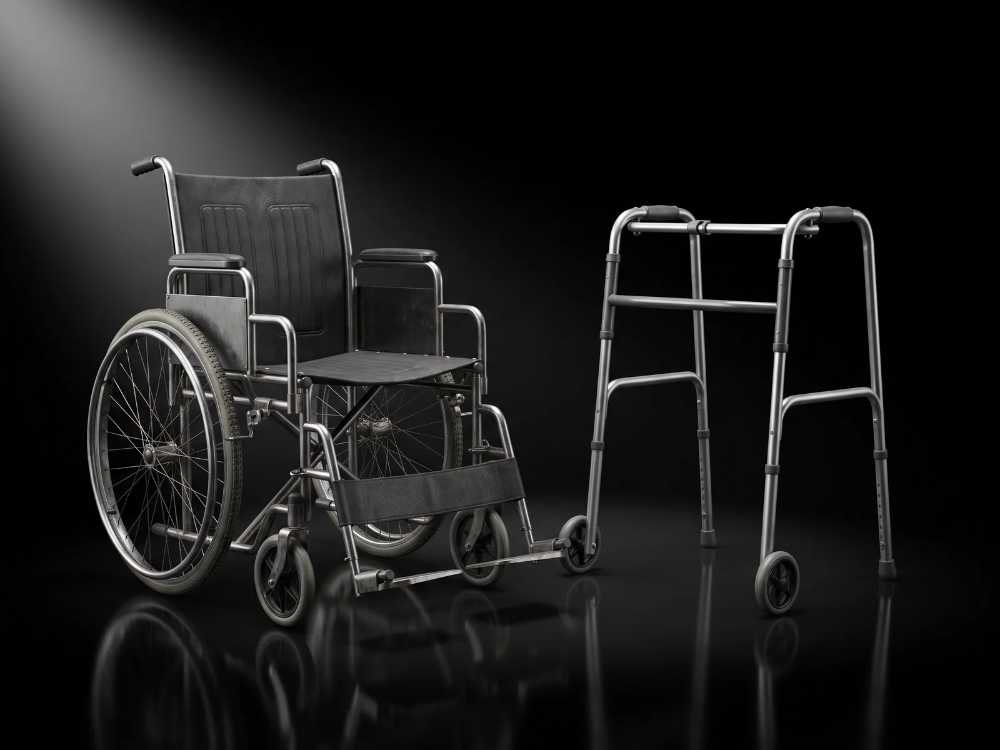
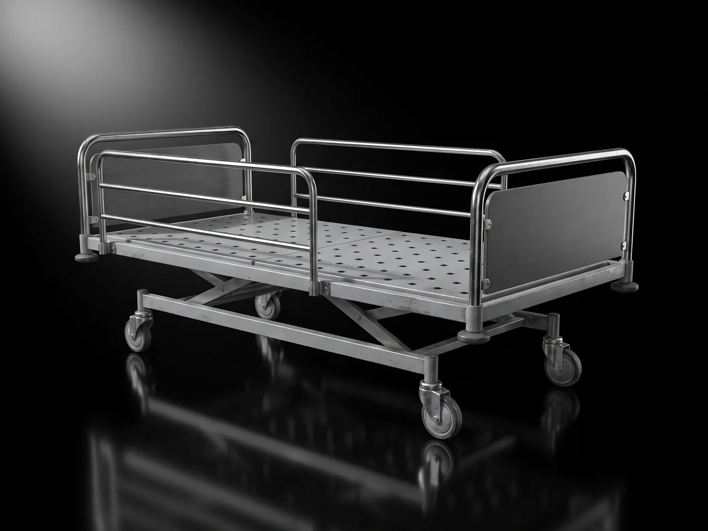
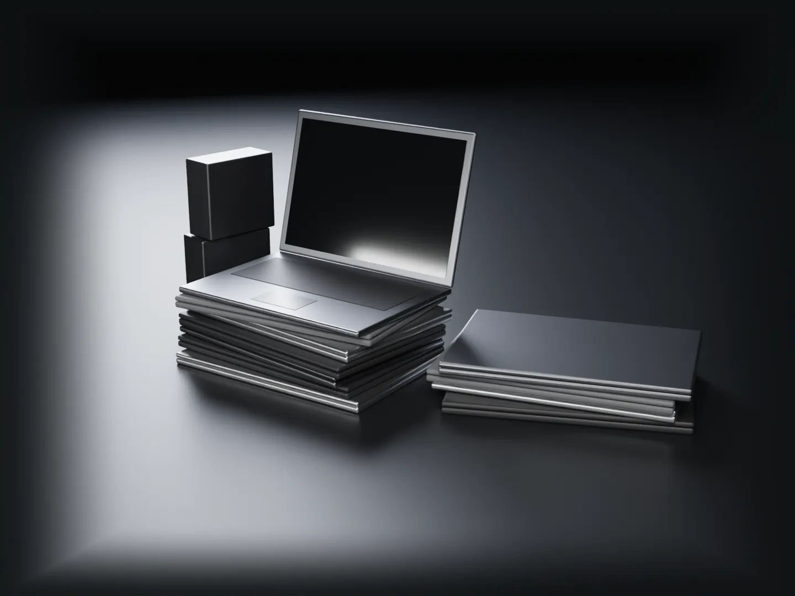

Retirement villages · hospitals · server rooms · universities
Collected with care.
Recycled with purpose.
Old beds, hoists, wheelchairs, server racks, laptops, lockers and lab equipment — collected from retirement villages, hospitals, universities and organisations, then recycled and reported. One service fee, quoted before we come.
Forge a partnership →
Who we collect from
Wherever the old equipment is
Villages upgrade rooms. Hospitals refit wards. Universities refresh labs and server rooms. Offices and councils strip out floors. Most of what comes out is metal — and none of it should go to landfill.

Retirement villages & aged care
Beds, hoists, wheelchairs and walkers, kitchen stainless and unit-refit steel. We plan the job around your residents.

Hospitals & health
Beds, trolleys, sterilisers, stainless, plant and retired medical equipment — once your biomedical team has cleared it.

Server rooms
Racks, cabinets, servers, network gear and copper cable. Drives out or wiped before we come.

Universities & TAFEs
Lab and workshop clear-outs, IT refreshes, shelving and steel furniture.

Schools
Lockers, shelving, workshop machinery and steel furniture from refits and campus upgrades.

Offices & government
Filing cabinets, compactus, desk frames, depot steel and fencing — through tenants, facility managers and councils.
What it costs
One fee, quoted before we come
Tell us what you have, where it is and when suits. Nothing is booked until you approve the quote.
For the whole job — crew, truck, lifting, dismantling, and specialist handling of IT and medical equipment. Quoted before we come.
A weighbridge docket and a collection statement for every load: weight, what it became and the CO₂-e avoided.
How it works
Book. Quote. Collect. Recycle. Report.
Book
Two minutes online: what it is, roughly how much, where and when.
Quote
We confirm what we can take and quote the service fee. Nothing is booked until you approve.
Collect
Our crews do the lifting and follow your site rules. Drives out or wiped first.
Recycle
Weighed at North Geelong and processed back into production.
Report
A statement for each collection: weight, what it became, carbon avoided.

Recorded and reported
Four numbers for every collection
Weighed in. What it was turned into. How much metal was recovered. The carbon that saved. We record all four for every collection, and you see them in your own portal — with statements your sustainability team can hand to a board, an auditor or a funder.
Done properly
Data, cleared equipment, clear limits
Drives out before we come
Removed or wiped by your team and confirmed in a signed declaration. We do not take loose drives.
Data-bearing equipment → MedicalCleared equipment only
Decontaminated and signed off. X-ray units made inoperable and notified as your licence requires.
Medical equipment → LimitsStraight about what we can't take
Asbestos, radioactive material, clinical waste, chemicals and gas cylinders go to specialists.
What we can't take →The film
One minute. Every tonne.
Real footage from the North Geelong plant, brought to motion, with the five metals rendered in 3D. No voiceover — the numbers do the talking.
Where it goes
Back into Australian production
The metal we collect is processed by us — steel, stainless, copper, aluminium and brass, each kept to its own stream — and sold to mills, foundries and manufacturers. That end market is what keeps the service fee down.


Part of Recycle Group
Backed by real infrastructure
The Metal Recycling Company is the metals business of Recycle Group — the Victorian resource-recovery group behind The Mattress Recycling Company, Recycle North Geelong and Australia's largest polystyrene plant. The group runs its own weighbridge, processing plant and trade recycling team at North Geelong — so the metal we collect is weighed and processed by us.
About the companyGot a room full of old equipment?
Book a collection. We confirm what we can take and quote the service fee before we come.